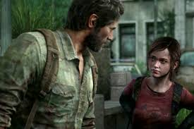
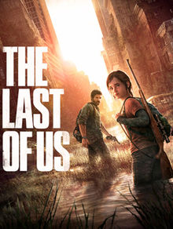

Es un videojuego de acción-aventura y supervivencia de terror desarrollado por la compañía
estadounidense Naughty Dog
y distribuido por Sony Computer Entertainment.


Assasin's Creed Saga
Assassin's Creed es una serie de videojuegos, historietas, libros, y cortos de ficción histórica. Los
videojuegos son de acción-aventura, sigilo y de mundo abierto. Se diferencian en videojuegos principales y
spin-offs.